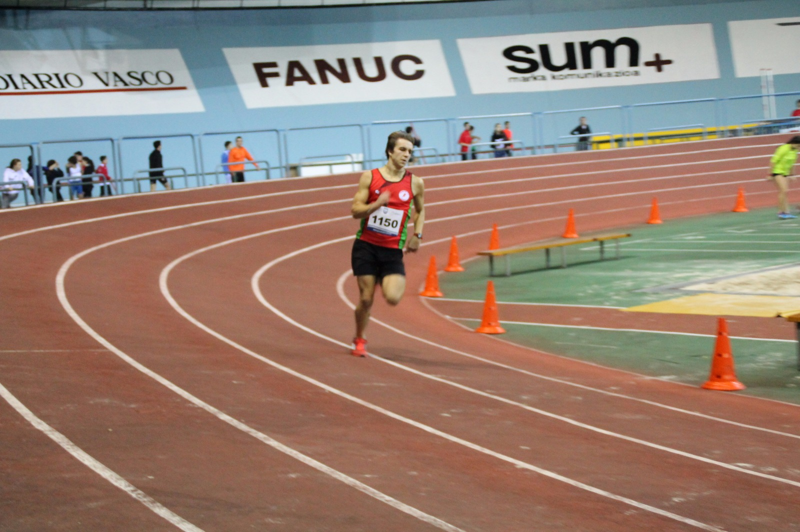
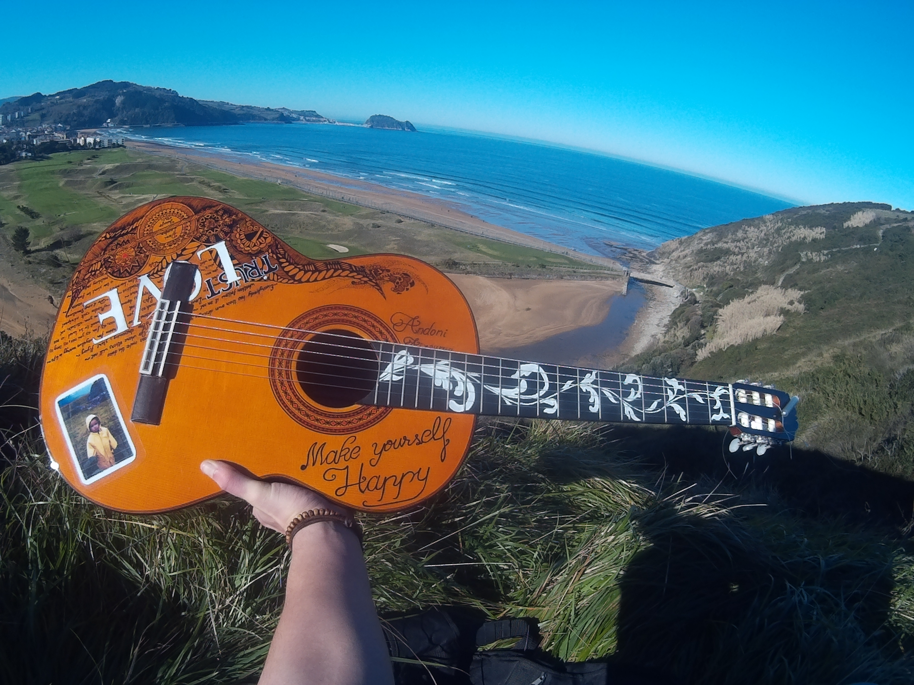

My name is Andoni Aizpurua and I am studying for a Certificate
of higher Education on Robotics and industrial automations in Zarautz (Spain).
My name is Andoni Aizpurua and I am studying for a Certificate
of higher Education on Robotics and industrial automations in Zarautz (Spain).
WHO I AM
My name is Andoni Aizpurua and I am studying for a Certificate
of higher Education on Robotics and industrial automations in Zarautz (Spain).
While growing up I discovered my enthusiasm for electronics and for building and making
things myself, mainly because of my fathers passion for building things.
Since I was young I've always helped my father either building or fixing things and making different projects.
As my father is a teacher on higher education he has always encouraged me to handcraft
things and he has tought me a lot throught the years, not just about electronics,
but also to handcraft wood and different materials and to repair mechanical
parts of some vehicles and machines (bikes, household appliances...).
Apart from a handyman, I consider myself as a hard worker, ambitious and dependable. I
really like to get things done as good as possible and I enjoy working mostly in
everything, and I always try to keep my promises.
I reckon myself as a pretty energetic
and positive guy because I really like all kind
of sports and despite making mistakes,
I try to learn from them and to always keep
a positive mindset.
HOBBIES

I mostly like spending my free time in my two main hobbies, playing guitar and sports.
Since I was a kid I've always liked doing sports, so when I was 11 years old I joined the local athletics club
(Antoniano Kirol Elkartea), in where I've trained since
then and where I've become coach and press director of the club. Futhermore, I like other sports too,
such as mountain biking and slacklining, which I usually practice during summer holidays.
Apart from doing sports, one of my main hobbies is playing guitar. I started playing the old guitar in the wardrobe of my house
when I was around 11-12 years old, and after 3 years learning how to play the classic and the electric guitars in an academy,
I've spent the other four years leaning and improving on my own.

This hobbie, which I practice every day, has gone so far to the point I own four guitars and I've even built my own.
Besides that, I enjoy learning new things and developing my knownledge in every way possible.